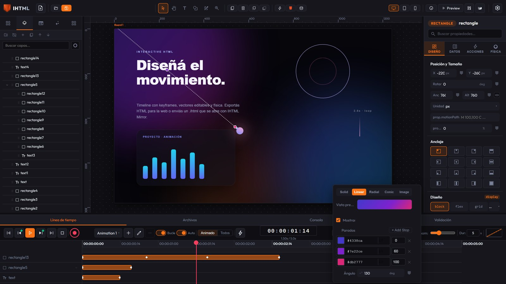
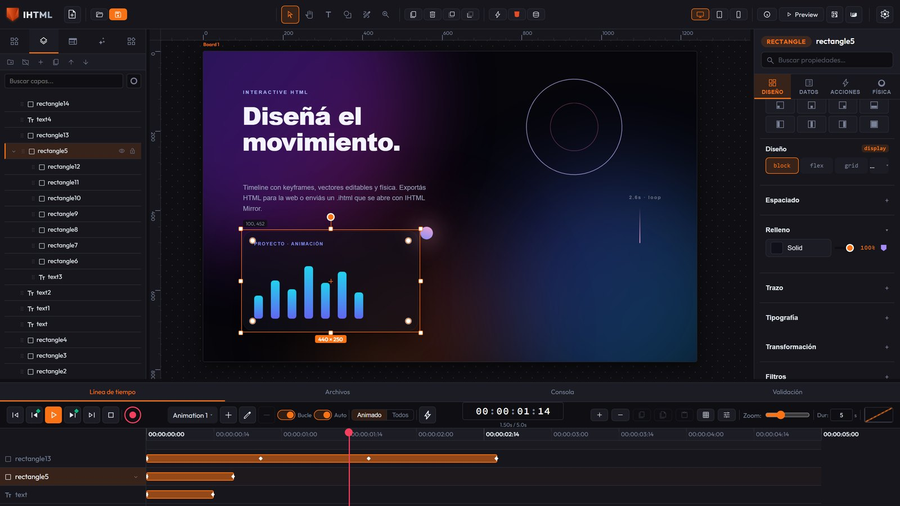
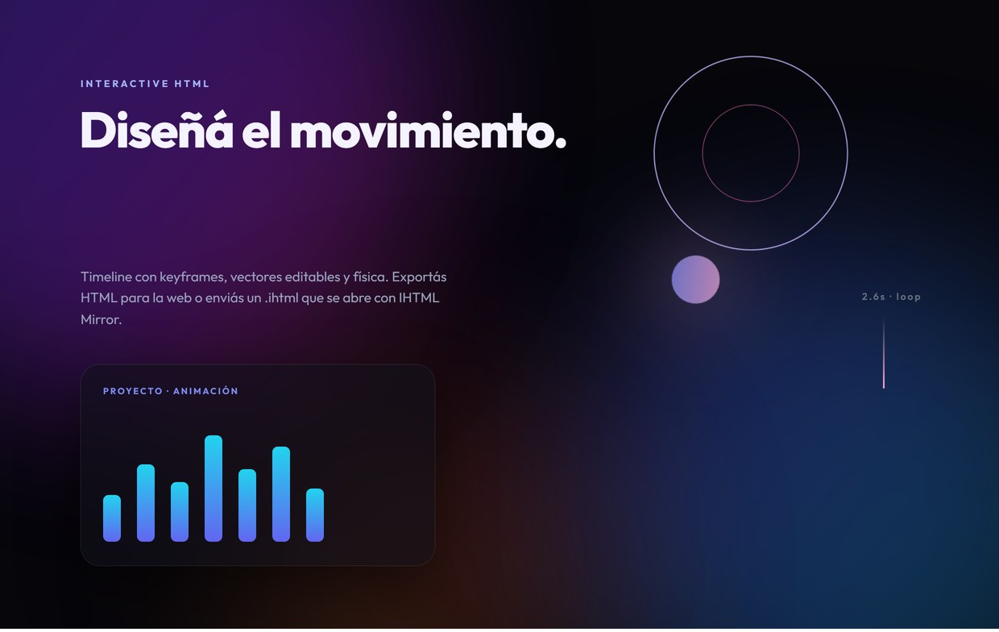

IHTML Interactive HTML
HTML/CSS动画可视化编辑器：带画板的画布、关键帧时间轴、属性检查器和无代码动作。适用于Windows、macOS、Linux和Android的应用。用Export HTML发布到网页，或发送一个.ihtml文件—一个可用IHTML Mirror打开并保持可编辑的交互式文档。

HTML/CSS动画可视化编辑器：带画板的画布、关键帧时间轴、属性检查器和无代码动作。适用于Windows、macOS、Linux和Android的应用。用Export HTML发布到网页，或发送一个.ihtml文件—一个可用IHTML Mirror打开并保持可编辑的交互式文档。
下载
桌面和Android应用。安装一次即可离线使用。
在Android上安装IHTML Mirror（打开并运行.ihtml文件）；完整编辑器仅限桌面版。iOS：敬请期待。想从源代码运行吗？
查看"如何开始"。
功能
从关键帧时间轴到真实物理引擎：专业级网页动画，尽在一个窗口内。
多个独立的命名动画、自动关键帧（REC）、可视化缓动、动作标记，以及键盘复制粘贴。
同一画布中的多个场景，各自拥有独立的尺寸和背景；导出时带过渡效果的可导航页面。
Design、Data、Actions和物理引擎：布局、支持网络字体搜索的排版、可直接在画布上绘制的渐变线（自动出现，一键操作）、与同一弹出层集成的取色器、hover/active状态、CSS类等。
点击、悬停、按键、滚动、延迟…用于显示/隐藏、动画、播放时间轴、设置变量、跳转页面等操作。
矩形、椭圆、多边形和用Pen工具绘制的路径：导出为真正的<svg>，支持节点编辑、布尔运算和关键帧形变。
可翻译的界面（EN、ES、PT、FR、DE、IT、JA、ZH）和六种明暗主题。这些是编辑器的偏好设置，不会包含在导出的文件中。
动画引擎使用transform（合成器/GPU）而不是left/top来定位—无论是在编辑器中还是在导出的HTML中。
window.ihtmlDocument：从你的脚本或<iframe>控制导出结果的动画、变量和动作。
真正的MCP服务器：Claude Code（或其他MCP客户端）直接控制已打开的编辑器—创建和编辑元素、切换断点、调整画布并导出，无需模拟点击。
导入.ihtml（以及旧版.json）、独立HTML、SVG，以及来自Sketch、Penpot和EPUB的设计。导出单文件或分离式HTML、图片（PNG/WebP/JPEG）、GIF和视频。
超过50种元素类型：文本、按钮、输入框、卡片、导航栏、价格表、标签页、滑块、画布、视频、iframe…每种都具有真实的HTML属性。
运作方式
画布、时间轴和检查器都在同一个窗口中。没有需要来回追踪的浮动面板。



文件格式
用于发布到网页的.html，或用于发送可用IHTML Mirror打开的交互式文档的.ihtml。
标准的.html文件（单文件或CSS+JS分离），内嵌动画引擎。可在任何浏览器和托管环境中运行，也可嵌入<iframe>。
.ihtml → 面向IHTML Mirror你发送的文件：包含整个项目（元素、动画、动作、字体、图片和视频）。收件人用免费应用IHTML Mirror（桌面版或Android）打开。
.ihtml可以重新编辑这个文件既是结果也是源文件：在编辑器中重新打开它，就能从上次停下的地方继续。不会丢失单独的项目文件。
IHTML Mirror
Mirror打开并运行.ihtml文件。可以把它想象成PDF—但具有动画、交互性，并且能控制谁能打开以及能打开多久。

提案、目录、报告、入职培训—以及无需互联网的交互式广告：把它放到U盘上带去展会、展位或商店，也能同样打开。你发送的是一个文件，而不是链接。
患者资料、知情同意书和操作指南：动画化、清晰易懂，并使用所需的语言。.ihtml文件不依赖可能会下线的网站。
互动书籍和笔记、课堂练习和演示文稿。学生无需账户即可打开；使用真实文本和ARIA角色，可兼容屏幕阅读器和键盘导航。
每个.ihtml文件都可以是公开、半私密或私密的（使用AES-256密码加密）。可选设置过期日期，适用于不应永久流传的资料。
文件内嵌了字体、图片和视频。只要有Mirror，即可离线打开：没有CDN依赖、没有加载不出的字体、没有失效的链接。
IHTML Mirror完全免费—就像PDF阅读器一样。创作者订阅以获得导出功能；接收方只需安装Mirror并打开文件。
价格
编辑器免费。订阅可启用导出功能。随时可取消。
也可选择年付US$36（相当于免费2个月）。最多支持2台设备。你的文件始终保存在你的电脑上。
入门
下载、安装，即可立即开始设计。无需账户，也无需联网。
.ihtml）。发布到网页用Export HTML；发送文档则用可被IHTML Mirror打开并可再次编辑的.ihtml。
想从源代码运行吗？克隆仓库并运行：
npm install npm run dev
打开Vite打印出的URL。要打包桌面应用：npm run tauri:build。
文档
编辑器的全部功能：界面、矢量图形、画板、时间轴、动作、物理引擎、导出、键盘快捷键和实时公共API。
常见问题
用四个简短的回答了解IHTML的要点。
IHTML（Interactive HTML）是一款HTML/CSS动画可视化编辑器：带画板的画布、关键帧时间轴、属性检查器和无代码动作。它是适用于Windows、macOS和Linux的桌面应用，也有Android应用，还可以从源代码在浏览器中运行。
是的：编辑器免费，你可以导出图片（PNG、WebP和JPEG）。每月4美元—或每年36美元—的订阅可启用.html和.ihtml文件的导入导出，以及GIF和视频导出；免费版不支持导出HTML。
这是IHTML的文档格式：内嵌了整个项目（元素、动画、动作、字体、图片和视频）。它由适用于桌面和Android的免费应用IHTML Mirror打开并运行，同一个文件也可以在编辑器中重新打开继续编辑。要发布到网页，需使用Export HTML生成标准的.html文件。
是的：.ihtml文件需要用IHTML Mirror打开（免费，支持Windows/macOS/Linux/Android）。这就像PDF阅读器一样—收到文件的人只需安装一次Mirror即可。如果你希望它无需安装就能在任何浏览器中运行，请用Export HTML导出，而不是.ihtml。
不会。项目保存在你的电脑上，编辑器可离线运行；没有账户，也没有后端。导出的HTML可在任何托管服务上运行，也可作为单个文件运行。应用包含可选的诊断遥测（仅错误和版本信息，绝不包含你的项目内容），可在设置中关闭。